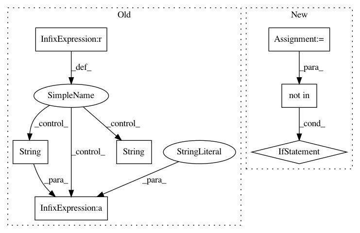

a6691d3b19ea8d48ea71e917878bc0cf52aa1af7,mloop/neuralnet.py,NeuralNet,fit_neural_net,#NeuralNet#Any#Any#,615
Before Change
net.init()
net.fit(train_params, train_costs, self.initial_epochs)
this_cv_loss = net.cross_validation_loss(cv_params, cv_costs)
if this_cv_loss < best_cv_loss and this_cv_loss < 0.1 * orig_cv_loss:
best_cv_loss = this_cv_loss
self.log.debug("Switching to reg=" + str(r) + ", cv loss=" + str(best_cv_loss))
self.last_net_reg = r
self.net.destroy()
self.net = net
After Change
// to a new one if it does better on the cross validation set
// than the old one.
previous_regularization = self.last_net_reg
regularizations = [0.001, 0.01, 0.1, 1, 10]
if previous_regularization not in regularizations:
regularizations.append(previous_regularization)
cv_losses = []
best_cv_loss = np.inf
for r in regularizations:
net = self._make_net(r)
In pattern: SUPERPATTERN
Frequency: 3
Non-data size: 7
Instances
Project Name: michaelhush/M-LOOP
Commit Name: a6691d3b19ea8d48ea71e917878bc0cf52aa1af7
Time: 2020-12-24
Author: zakven@mit.edu
File Name: mloop/neuralnet.py
Class Name: NeuralNet
Method Name: fit_neural_net
Project Name: danforthcenter/plantcv
Commit Name: dfecea486703d727905657b2dce890664dd1ba72
Time: 2017-04-18
Author: noahfahlgren@gmail.com
File Name: plantcv/rgb2gray_hsv.py
Class Name:
Method Name: rgb2gray_hsv
Project Name: danforthcenter/plantcv
Commit Name: debc0119477659ebb58124a860479d61d87effe5
Time: 2017-04-18
Author: noahfahlgren@gmail.com
File Name: plantcv/rgb2gray_lab.py
Class Name:
Method Name: rgb2gray_lab